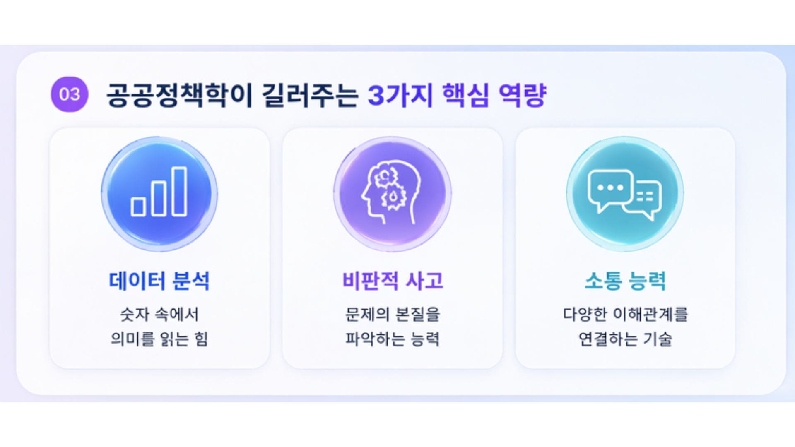
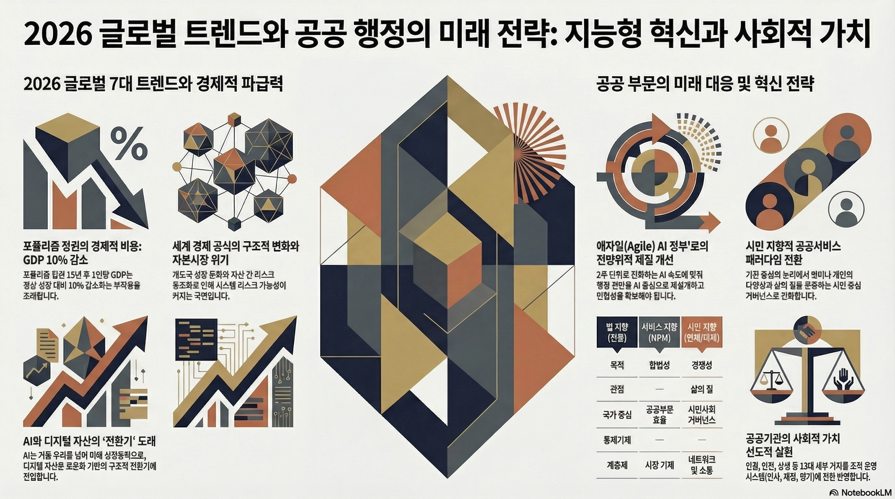

본질을 꿰뚫는 섬세한 분석으로,
모두가 안심하고 살아가는 내일을 설계합니다.
Name
하동윤
안녕하세요. 저는 공공정책학부 하동윤입니다.
저는 복잡한 현상 속에서 일정한 질서를 찾아내고, 이를 논리적으로 구조화하는 과정에 큰 흥미를 느낍니다.
제 MBTI는 INTP/ISTP입니다. 감정에 치우치지 않고 객관적인 데이터를 바탕으로 수많은 변수를 섬세하게 검토할 수 있는 신중함을 가지고 있습니다.
저는 음악을 감상하는 것과 잠자는 것을 좋아합니다.
사회의 균형을 잡는 정교한 설계의 학문
사회가 지향해야 할 공익적 가치를 설정하고, 더 나은 공동체의 방향을 제시합니다.
설정된 목표를 위해 자원과 제도를 어떻게 투입할지 섬세하게 공학적으로 접근합니다.
다양한 이해관계를 차분히 조율하여 합리적이고 지속 가능한 대안을 도출합니다.
공공정책학을 5장의 카드로 소개합니다.

AI가 분석한 '2026 글로벌 트렌드와 공공 행정의 미래'

포퓰리즘과 급격한 자본 시장 위기 속에서 공공 행정의 역할은 더욱 정밀해져야 합니다. 저는 거시적 흐름을 차분히 읽어내어 리스크를 최소화하는 행정 전문가를 꿈꿉니다.
단순한 기술 도입을 넘어 '시민의 삶의 질'을 최우선으로 하는 거버넌스로의 전환이 핵심입니다. 데이터 이면의 목소리를 섬세하게 파악하는 역량이 필수적입니다.
차가운 데이터와 따뜻한 시선을 결합한 공공 전문가가 되겠습니다.
국민이 체감할 수 있는 정교한 행정을 실천하는 것이 저의 소명입니다.
AI와 데이터를 활용해 정책의 효과를 미리 예측하고, 한정된 자원을 가장 필요한 곳에 배분하는 효율적인 시스템을 만들겠습니다.
공무원 또는 공기업인으로서 현장의 작은 불편함까지 데이터화하여, 누구도 소외되지 않는 맞춤형 정책 서비스를 설계하겠습니다.